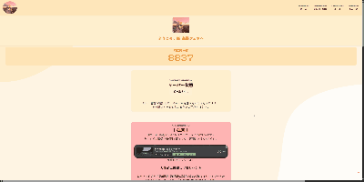

ちょっとしたデザイン変更 | NEWS
Minor design changes | News
デザイン変更しました!
全体的に中央揃えにしたり、フェードインを入れてみたり、ホームが最初、おしゃれになったり...。色々こだわってみました!
比較

before

after
Minor design changes | News
全体的に中央揃えにしたり、フェードインを入れてみたり、ホームが最初、おしゃれになったり...。色々こだわってみました!
before
after